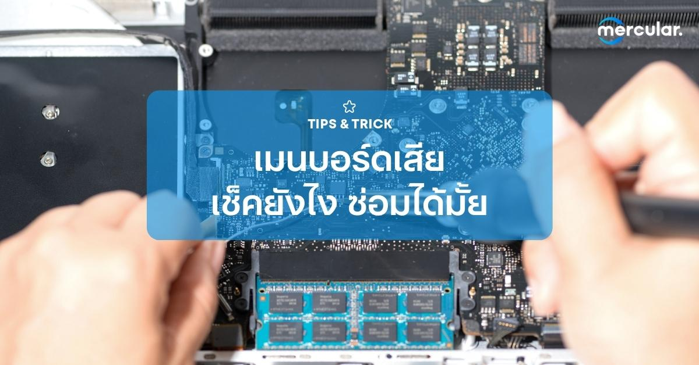

บรรดาอุปกรณ์ฮาร์แวร์ต่างๆ บนคอมพิวเตอร์ที่เราไม่ยากให้มีปัญหาที่สุดนั้นก็คงหนีไม่พ้นเจ้า "เมนบอร์ดคอมพิวเตอร์"ที่ถือว่าเป็นปัญหาใหญ่สุดๆ ในบรรดาฮาร์ดแวร์ทั้งหมดในเครื่องเราแล้ว เพราะปัญหาที่เกิดขึ้นจากเมนบอร์ดนั้นก็แทบจะมีเป็นร้อยแปดอย่าง แถมกว่าจะหาเจอก็ต้องเสียเวลารื้อหาต้นเหตุอีก ดังนั้น วันนี้เราจะทุกคนมาดูอาการเมนบอร์ดเสีย พร้อมวิธีเช็ค และขั้นตอนการแก้ต่างๆ ส่วนจะมีอาการแบบไหน แล้วจะแก้ยังไงได้บ้านนั้น เรามาดูกันเลย
เมนบอร์ดเสีย อาการเป็นยังไงบ้าง
เปิดคอมไม่ติด
อาการมาตรฐานที่หลายๆ คนต้องเจอกันบ้าง แถมอาการเปิดคอมไม่ติดนั้นก็แทบจะมีสาเหตุหลักๆ อยู่สองอย่างด้วยกัน อย่างแรกเลยก็คือปัญหาเกี่ยวกับระบบจ่ายไฟของคอมพิวเตอร์ ที่เกิดจากตัวพาวเวอร์ซัพพลาย หรือไม่ก็ระบบจ่ายไฟของตัวเมนบอร์ดเอง ที่สายแพรอาจจะหลวมหรือเสื่อมสภาพไป ส่วนสาเหตุอย่างที่สองนั้นก็ถือว่าน่ากลัวสุดๆ เลยก็คือปัญหาไฟลัดวงจร ที่เกิดขึ้นจากบนชิพ ซ็อกเก็ต คาปาซิเตอร์ ภาคจ่ายไฟ และบริเวณพอร์ตต่างๆ ซึ่งก็เกิดขึ้นได้จากการเสื่อมสภาพตายอายุการใช้งาน หรือสิ่งแปลกปลอมเข้าไฟลัดวงการก็ได้ อย่างเช่นน้ำ ความชื้นต่างๆ ฝุ่น และแมลงที่หลุดเข้าไป ก็เป็นสาเหตุที่ทำให้เมนบอร์ดของเราพังนั่นเอง
เปิดคอมขึ้น BIOS ได้ แต่เข้า Windows ไม่ได้
อีกอาการที่เกี่ยงข้องกับเมนบอร์ดพังที่ตามกันมาแบบติดๆ เลยก็คือการที่เราสามารถเปิดคอมพิวเตอร์ บูตขึ้น BIOS ได้ปกติ แต่กับบูตเข้าหน้า
Windows หรือ OS ต่างๆ ไม่ได้ซะงั้น ซึ่งอาการนี้ก็มีสาเหตุหลักๆ อย่างการเชื่อมต่อของ Storage บนคอมพิวเตอร์บนคุณ ทำให้เมนบอร์ดของเรานั้นหาที่อยู่ OS ไม่เจอนั่นเอง ซึ่งต้นเหตุก็มีตั้งแต่ตัว Storage เองที่ชำรุด หรือเป็นบที่ตัวพอร์ตการเชื่อมต่อ SATA หรือ M.2 บนเมนบอร์ดเอง และอีกสาเหตุที่มักจะเป็นกันก็คือถ่าน BIOS หมด ซึ่งเจ้าถ่านไบออสนี้ทำให้จ่ายไฟให้กับวงจร CMOS ที่ดูแลระบบนาฬิกาและการบูตคอมพิวเตอร์ ซึ่งถ้าเกิดถ่านตัวนี้หมดลง ก็จะเกิดออเรอร์ของระบบ ทำให้เราไม่สามารถเข้า WIndows ได้นั่นเอง
หาฮาร์ดแวร์, อุปกรณ์ต่างๆ ไม่เจอ
อีกอาการที่สามารถเกิดขึ้นได้กับเมนบอร์ดของใครหลายๆ คนเลยก็คือการก็จู่ๆ คอมพิวเตอร์ของเราก็มองไม่เห็นอุปกรณ์ฮาร์ดแวร์หรืออุปกรณ์อื่นๆ ข้างนอกอย่างเมาส์ คีย์บอร์ด ซะอย่างงั้น ซึ่งถ้าเกิดว่าปัญหานี้ไม่ได้อยู่ที่ตัวอุปกรณ์เอง ก็จะเป็นเพราะพอร์ตการเชื่อมต่อ ซ็อกเก็ตต่างๆ ของตัวเมนบอร์ดเองที่เป็นปัญหาเสียเอง ทำให้มองไม่เห็นอุปกรณ์ที่เสียบอยู่นั่นเอง
ขึ้นบลูสกรีนบ่อยๆ อาจเป็นเพราะเมนบอร์ด
ปัญหาจอฟ้า ก็เป็นอีกหนึ่งสิ่งที่มีสาเหตุจากฮาร์ดแวร์ภายในเครื่อง โดยเฉพาะกับตัวเมนบอร์ดนี้เองที่เป็นสาเหตุที่ทำให้เกิด Blue Screen ขึ้นมา โดยต้นเหตุส่วนใหญ่ก็มักจะเกี่ยวข้องกับอาการที่กล่าวไปก่อนหน้าซะส่วนใหญ่ เพราะฉะนั้น ถ้ารู้สึกว่าแก้ปัญหายังไงก็คอมก็ยังจอฟ้าไม่หยูด ก็อย่าลืมสาเหตุว่าเมนบอร์ดเสีย ก็เป็นได้
เมนบอร์ดเสีย เช็คได้ยังไง
เช็คการติดติ้ง การเชื่อมต่อของอุปกรณ์และพอร์ตต่างๆ
วิธีการเช็คเมนมอร์ดของเราว่ามีอะไรที่ผิดปกติมั้ย อย่างแรกเลยก็คือการตรวจสอบกับอุปกรณ์ ฮาร์ดแวร์ต่างๆ ในเครื่องของเรา ไม่ว่าจะเป็นซีพียู, แรม, การ์ดจอ ก็อาจจะเป็นต้นเหตุที่ทำให้เมนบอร์ดของเราชำรุดได้ ซึ่งเราอาจจะลองนำฮาร์ดแวร์ชิ้นนั้นๆ ไปลองใส่กับช็อกเก็ตช่องอื่นๆ ที่มีบนเมนบอร์ดดูว่าช็อกเก็ตของเรานั้นมีปัญหาหรือเปล่า หรือเป็นที่เราใส่อุปกรณ์แวร์ต่างๆ ไม่เหมาะสม หรือนำฮาร์ดแวร์ชิ้นนั้นไปทดลองใส่กับคอมพิวเตอร์เครื่องอื่นๆ ดูเพื่อให้มั่นใจว่าชิ้นส่วนนั้นไม่ได้เป็นปัญหา แต่เป็นที่เมนบอร์ดของเรานี่แหละ
เช็คค่าต่างๆ ใน BIOS
นอกจากการเช็คฮาร์ดแวร์อื่นๆ ในเครื่องดูแล้ว เราก็ควรที่จะเช็คค่าข้อมูลต่างๆ บนหน้าต่าง BIOS ของเมนบอร์ดดูด้วย เพราะถ้าหากเมนบอร์ดของเรามีปัญหา ค่าบางอย่างก็จะมีความแตกต่างจากเดิมอย่างแน่นอน อย่างเช่นความร้อนของเมนบอร์ด และการมองเห็นพอร์ตต่างๆ ในเครื่องของเรา รวมถึงยังสามารถเช็คถ่าน BIOS ได้ เพราะถ่าน BIOS ก็มีส่วนเกี่ยวข้องกับการเข้าหน้า BIOS เช่นกัน ทำให้เรารู้ได้ว่ากำลังเจอปัญหาอะไรอยู่นั่นเอง
เมนบอร์ดเสีย ป้องกันแก้ไขยังไงได้บ้าง
ทำความสะอาดก่อนเลย
ถ้าย้อนกลับไปที่ปัญหาคีย์บอร์ดข้อแรก จะเห็นว่าปัญหาที่ทำให้เมนบอร์ดเสียหายก็คือเรื่องของฝุ่นผงที่เข้าไปติดในแผงวงจรจนทำให้เกิดปัญหา ซึ่งวิธีการป้องกันที่ดีทีสุดอย่างหนึ่งก็คือการถอดเมนบอร์ดออกมาทำความสะอาดอย่างเป็นประจำ ก็จะทำให้ลดปัญหาสิ่งแปลกปลอมหลุดเข้าไปในเมนบอร์ดได้ ซึ่งวิธีทำความสะอาดหลักๆ ก็คือการปัดฝุ่นหรือฉีดน้ำยา Contact Cleaner เพื่อป้องกันฝุ่นเกาะ หรือถ้าจะ Advance กว่านั้นก็จะเป็นการใช้น้ำล้างทั้งเมนบอร์ดไปเลย แต่ก็ต้องระวังเรื่องการตากให้แห้งสนิทก่อนน้ำไปประกอบคอมต่อ ไม่งั้นจากป้องกัน จะกลายเป็นพังซะเอง
ดูแลเรื่องระบบไฟให้ดี
ปัญหาไฟตก ไฟกระชากบ่อยๆ ก็ส่งผลให้เมนบอร์ดเสียหายได้เร็วขึ้นเหมือนกัน เพราะฉะนั้นเราก็ควรที่จะใส่ใจกับอุปกรณ์ไฟของเราด้วย อย่างพาวเวอร์ซัพพลายที่มีคุณภาพได้รับมาตรฐาน มีกำลังไฟที่เพียงพอต่อการใช้งาน รวมถึงการใช้งานกับอุปกรณ์เสริมอย่างเครื่องสำรองไฟ UPS และปลั๊กไฟป้องกันไฟตก ไฟกระชาก เพื่อเป็นป้องกันไม่ให้คอมพิวเตอร์และเมนบอร์ดของเราได้ลาโลกก่อนวัยอันควร
ส่งเครม/ส่งซ่อม/ซื้อใหม่
ปัญหาเมนบอร์ดเสียในหลายๆ ส่วนนี้ มักจะเป็นสิ่งที่คนทั่วไปไม่สามารถแก้ได้ง่ายๆ ถ้าไม่ใช่ช่างหรือผู้เชี่ยวชาญ ดังนั้น หากเมนบอร์ดของคุณยังไม่หมดประกัน ก็แนะนำให้ส่งเคลมกับทางผู้รับประกันดีกว่า หรือถ้าเกิดหมดประกันแล้ว เราก็ขอแนะนำให้คุณซึ้อเมนบอร์ดตัวใหม่ไปเลยดีกว่า เพราะการที่เมนบอร์ดพังบ่อยๆ ก็เป็นสัญญาณเตือนว่าเมนบอร์ดของเรานั้นถึงวัยอันควรแล้ว และสำหรับเมนบอร์ดรุ่นทั่วไปที่อยู่ในหลักพันนั้นไม่ค่อยคุ้มค่าซ่อมซักเท่าไหร่ สู้ซื้อเมนบอร์ดตัวใหม่ไปเลยดีกว่า แต่ถ้าจะเลือกซ่อม ก็แนะนำให้มองหาช่างที่มีฝีพอ และมีเครดิตหน่อย จะได้ไม่มีปัญหาแถมมาในภายหลัง
และนี่ก็เป็นวิธีการแก้ไขปัญหาเมนบอร์ดเสียในเบื้องต้นคร่าวๆ เพราะเมนบอร์ดนั้นก็มีโอกาศชำรุดเช่นเดียวกับอุปกรณ์ IT รูปแบบอื่นๆ
|